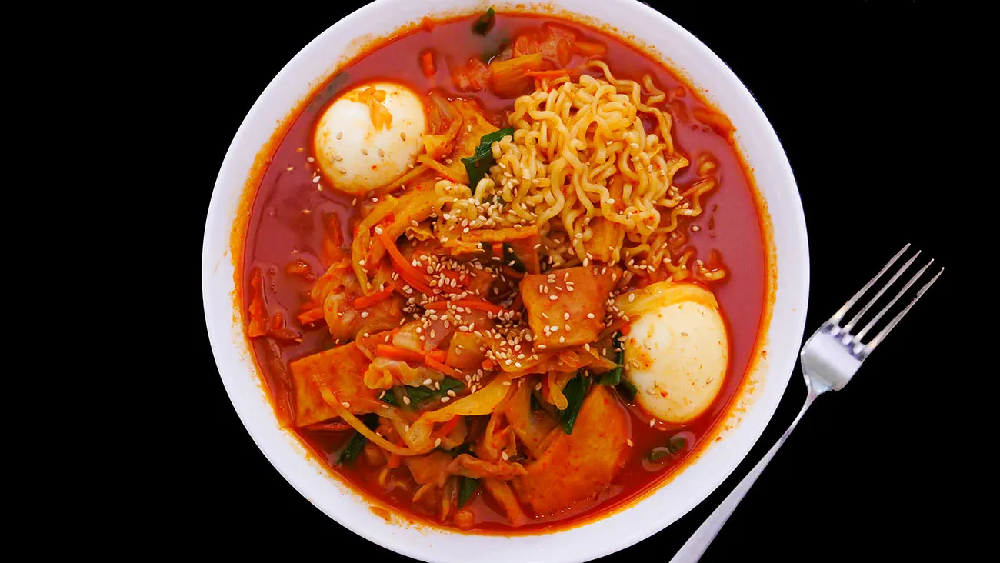
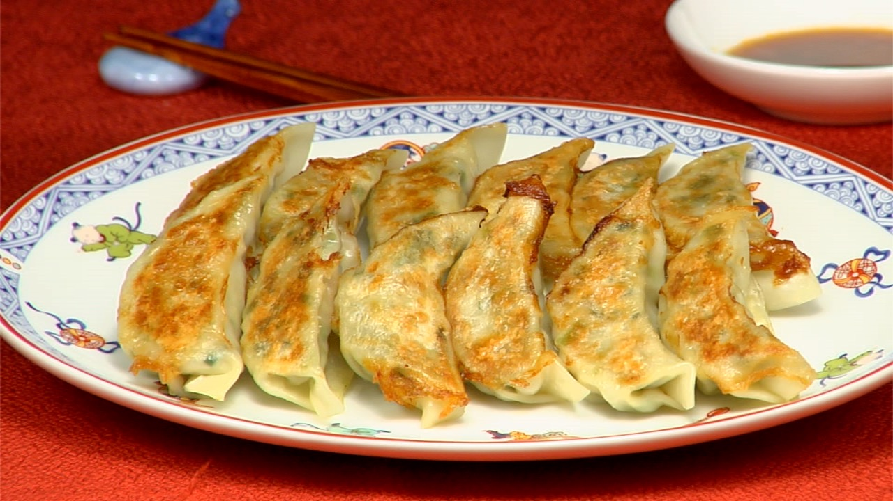

Takara Noodle
A culinary journey that celebrates the rich tradition of Japanese cuisine, offering a delightful selection of soups, salads, stir-fried noodles, and our specialty ramen.
Hours of Operation
Monday: 11am-10:30pmTuesday: Closed
Wednesday: 11am-10:30pm
Thursday: 11am-10:30pm
Friday: 11am-10:30pm
Saturday: 11am-10:30pm
Sunday: 11am-10:30pm
Specialties
Ramen, Stir-Fry, Soups, Japanese FoodLocation
948d Walker Ave, Greensboro, NC 27403Dish Reccomendations
Red Spicy Ramen ($13.99)
Yaki-Gyoza ($5.00)
Lo Mein ($11.99)